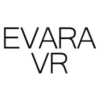

NYU Tandon School of Engineering
Class of 2019
Major: Integrated Digital Media
Minor: Game Engineering
Class of 2019
Major: Integrated Digital Media
Minor: Game Engineering
Bio:
Hello! My name is Howard Park and welcome to my portfolio website!
I grew up playing a lot of PC games because my father ran a PC방 (Korean PC Cafe). I absolutely fell in love with RTS games like Starcraft and Warcraft and would spend many hours creating custom games on the Warcraft III World Editor. When I wasn't playing games at the time, I spent a lot of time playing with Legos, writing stories, reenacting Warcraft scenes, and creating Star Wars stop motion movies. I was always obsessed with the idea behind creating games; the fact that you could create entire worlds, stories, and experiences out of thin air and viscerally explore them in Virtual Reality, Augmented Reality, and, of course, the PC. Now that I've grown up (unfortunately), I now dedicate my time developing games on Unity and prototyping the many passion projects I've thought of on late night drives.
I also enjoy making games with others so if you ever need a game programmer for a Jam or maybe even a job :^), I am more than ready. Or if you just want to talk about games, anime or esports, that's cool too. Some of my favorite games right now are Overwatch 2, Dead Space Remake, and Osu!.
Unity Experience:
Ultraviolet
Unity Developer (Jan 2022 - Jun 2022)
AR Creative Developer (Apr 2021 - Jan 2022)
Unity Developer (Jan 2022 - Jun 2022)
AR Creative Developer (Apr 2021 - Jan 2022)

Evara VR
AR Unity Developer Intern (Sep 2020 - Feb 2021)
AR Unity Developer Intern (Sep 2020 - Feb 2021)
Tandon Online
Unity Developer (Apr 2018 - Aug 2018)
Unity Developer (Apr 2018 - Aug 2018)
Contacts:
howard.park@nyu.edu
LinkedInIndeed